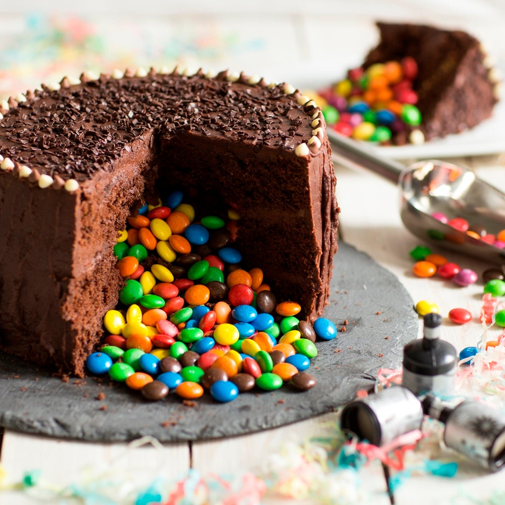
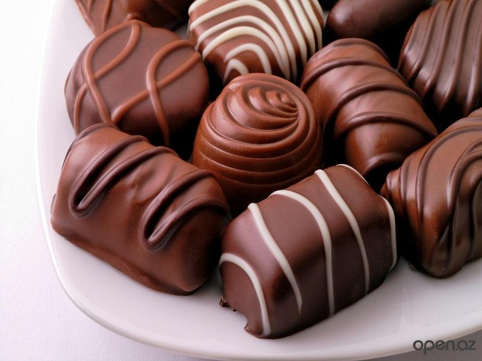
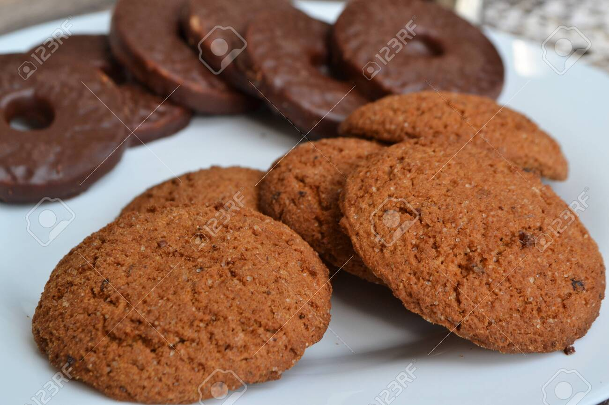
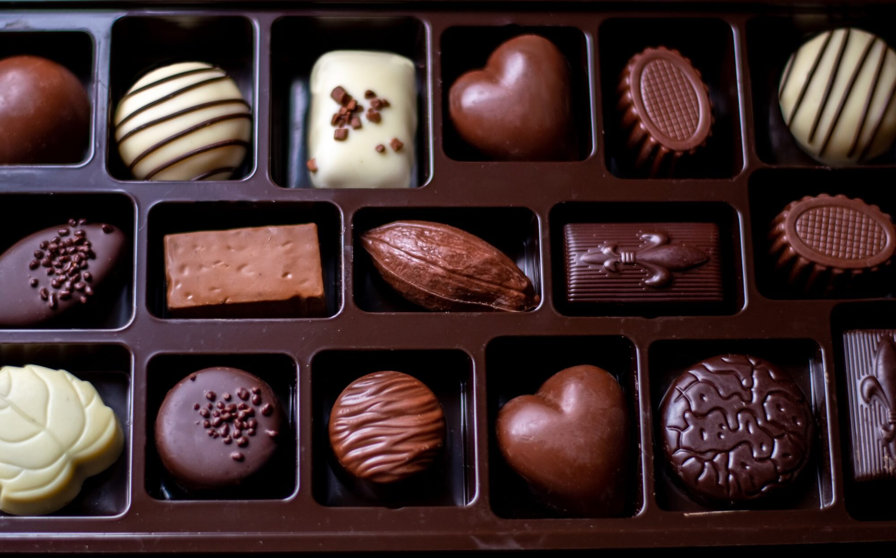
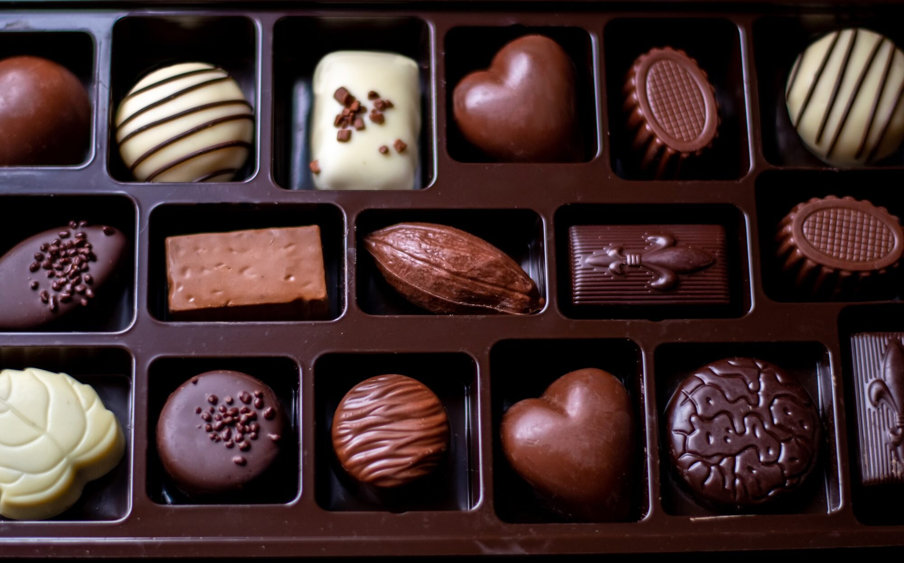
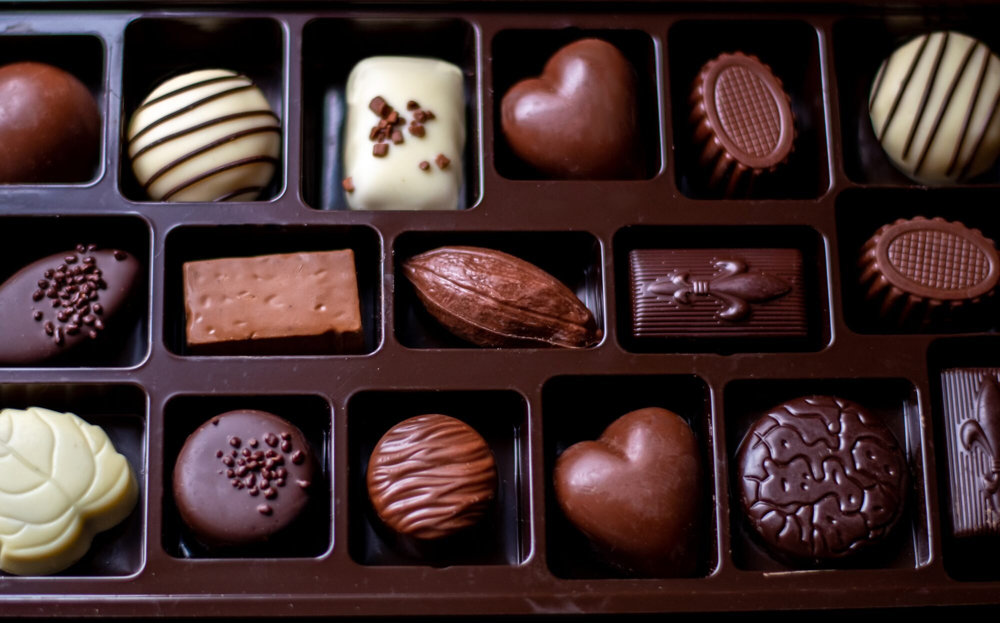

Our Products
   

Chocolate is a food product made from roasted and ground cacao pods, that is available as a
liquid, solid or paste, on its own or as a flavoring agent
in other foods. Cacao has been consumed in
some form since at least the Olmec civilization (19th-11th century BCE),[1][2] and the majority of
Mesoamerican people -
including the Maya and Aztecs - made chocolate beverages.[3]
The seeds of the cacao tree have an intense
bitter taste and must be fermented to develop the flavor.
After fermentation, the beans are dried, cleaned, and roasted.
The shell is removed to produce cocoa
nibs, which are then ground to cocoa mass, unadulterated chocolate in rough form. Once the
cocoa mass
is liquefied by heating, it is called chocolate liquor. The liquor may also be cooled and processed into its
two components:
cocoa solids and cocoa butter. Baking chocolate, also called bitter chocolate, contains
cocoa solids and cocoa butter in varying proportions,
without any added sugar. Powdered baking cocoa,
which contains more fiber than cocoa butter, can be processed with alkali to produce dutch cocoa.
Much
of the chocolate consumed today is in the form of sweet chocolate, a combination of cocoa solids, cocoa
butter or added vegetable oils,
and sugar. Milk chocolate is sweet chocolate that additionally contains
milk powder or condensed milk. White chocolate contains cocoa butter, sugar, and milk, but no cocoa solids.
